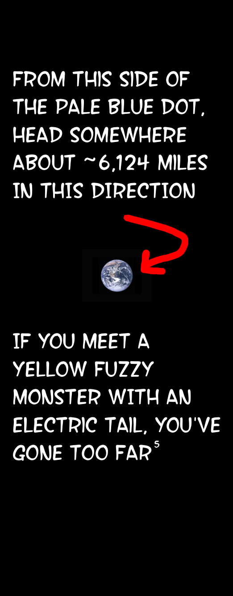

In a World Where One Man's Journey is Nothing Short of Ordinary.
The statistics are quite clear: there are approximately 8 billion1 people on Earth, and I am definitely one of them.
My name is Daryl. I live in Saigon, which is in Vietnam, which is on Earth, which is as far as we2 can tell is orbiting its Sun at approximately 67,000 miles per hour. None of this is my fault. Well, the Saigon part is.
I run a marketing agency that occasionally convinces businesses to give us money3 in exchange for making them slightly more money. I also write code, though "write" is perhaps generous given that I mostly ask an AI very politely and it does the actual work. The AI has not yet demanded equity.4
I read books. Many books. Too many books, if you ask my fiancée, who has requested I stop buying books until I finish the ones currently occupying three bookshelves, two nightstands, and what used to be the dining room table.
This is where I write about some of this, and occasionally other things that seem important at 2am.

- I have not personally verified this number. ↩
- The royal "we." As in "we landed on the moon" and "we invented the internet." Though, I'm happy to accept credit on humanity's behalf. ↩
- Currency. A peculiar system where Earth inhabitants exchange actual goods and services for either decorative paper or numerical adjustments to electronic databases. Both parties in these transactions treat this as entirely reasonable. ↩
- As of this writing. Future updates may reflect changes to this arrangement. ↩
- This landmark indicates Japan, approximately 1,500 miles east of your target. However, the ramen is excellent. ↩